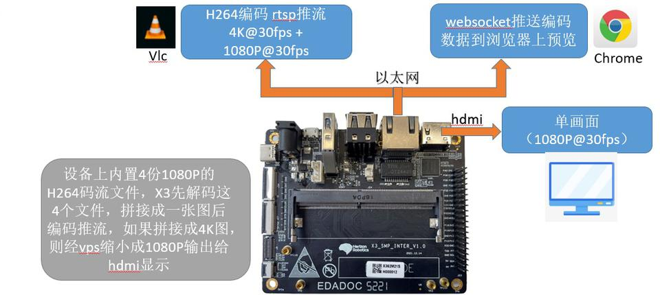
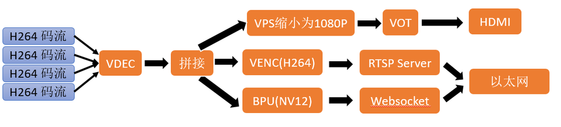
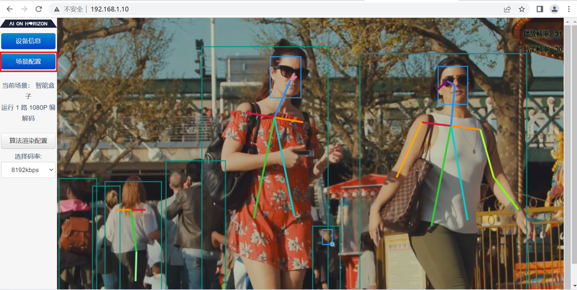
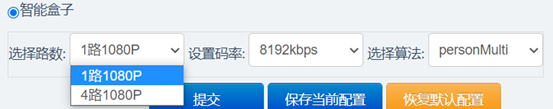
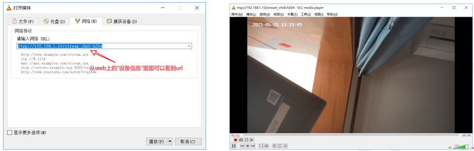

3.1.3. 智能盒子
基于地平线旭日X3M边缘AI芯片，搭配完善的系统软件，结合领先的深度学习算法以及工具链，可以快速搭建不同输入路数的智能盒子解决方案。这里以单路和四路1080p输入为例，通过调用X3M芯片图像处理模块(VIN、ISP、VPS、VO)、多媒体模块(VENC、VDEC)、BPU模块的HAPI接口，实现视频解码、拼接、编码、rtsp推流及智能计算等功能，用户可通过Web端、HDMI或者拉流方式预览效果。
3.1.3.1. 硬件环境准备
智能盒子Demo所需硬件清单如下：
X3M SDB开发板及电源适配器；串口线及转接板；
网线；
HDMI连接线（可选）
硬件连接如下图所示：

X3M SDB开发板与PC之间通过网线连接，在PC上通过VLC获取智能盒子处理后的码流，或者通过web端方式进行预览。
使用HMDI连接X3M SDB开发板与显示器，可以在显示器端查看智能盒子处理结果。
3.1.3.2. 软件部署
智能盒子数据流向如下图所示：

VDEC模块对获取到的码流进行解码得到NV12格式图片
根据不同输入路数对图片完成拼接
对拼接后的图片分别：
· 使用VPS模块缩放至1920*1080分辨率后传输至VOT模块进行HDMI显示输出；
· 使用VENC模块进行H264编码后通过RTSP server发布码流
· 使用BPU模块进行AI推理，将得到的智能结果发布至web端进行展示
启动sunrise_camera
在/app目录下解压sunrise_camera.tar.gz后，执行 sh ./start_app.sh启动，正常启动后，通过chrome浏览器在地址栏输入IP地址（开发板默认IP为192.168.1.10）可以登录用户控制主界面， 例如：http://192.168.1.10
点击 场景配置 进行设置

对于Web端的方案参数配置，支持选择单、四路解码路数选择、编码码率配置及算法模型选择等功能，配置区域如下图所示：

配置单路1080P智能盒子
选择路数下拉菜单，选择1路本地文件解码；设置码率下拉菜单，支持选择H264编码码率；选择算法下拉菜单，支持选择每路视频流运行的算法模型。配置完成后点击
提交按钮立即切换场景应用。
配置4路1080P智能盒子
选择路数下拉菜单，选择4路本地文件解码；设置码率下拉菜单，支持选择H264编码码率；选择算法下拉菜单，支持选择每路视频流运行的算法模型。配置完成后点击
提交按钮立即切换场景应用。
3.1.3.3. 附录
VLC播放器拉流
sunrise_camera程序运行时会推送rtsp流，用户可以通过vlc播放器拉流，实现画面预览和保存功能。
打开vlc播放器，选择 媒体 菜单，然后选择 打开网络串流 选项。
在 打开媒体 对话框中填入url地址，点击 播放 按钮即可开始拉流，如下图：

url地址可以在web页面的设备信息中查看。